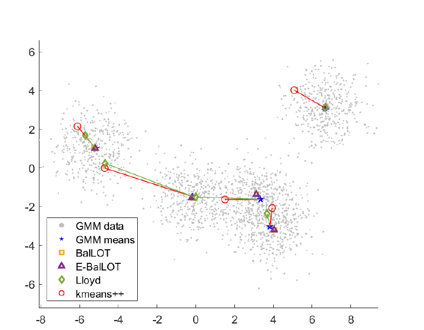

Wenyan Luo
PhD Candidate in Mathematics
About
I am a PhD candidate in Mathematics at The Ohio State University, advised by Dustin G. Mixon. My research interests lie at the intersection of high-dimensional probability, data science, and optimization, with a focus on optimal transport, semidefinite programming, and any-dimensional optimizations.
Previously, I studied mathematical and computational methods for clustering and the recovery of low-dimensional probability distributions under the Wasserstein metric, with an emphasis on methods that are theoretically principled and effective in practice.
Education
PhD in Mathematics, Applied Track
The Ohio State University, Columbus
PhD candidate · Advisor: Dustin G. Mixon · GPA: 4.00/4.00
2022–present
BSc in Mathematics and Applied Mathematics
The Chinese University of Hong Kong, Shenzhen
First Class Honours · GPA: 3.76/4.00
2018–2022
Publications and preprints
-

Balanced mixture clustering and centroid correspondence.BalLOT: Balanced k-means clustering with optimal transport Wenyan Luo and Dustin G. Mixon Submitted to Mathematical Programming · Under revision · arXiv -
 Clustering geometry of sliding windows of time series.
On the clustering behavior of sliding windows Boris Alexeev, Wenyan Luo, Dustin G. Mixon, and Yan X. Zhang Accepted to the SIAM Journal on Mathematics of Data Science · arXiv
Clustering geometry of sliding windows of time series.
On the clustering behavior of sliding windows Boris Alexeev, Wenyan Luo, Dustin G. Mixon, and Yan X. Zhang Accepted to the SIAM Journal on Mathematics of Data Science · arXiv
Current work
- Transferable Learning for Permutation-Equivariant Optimization, with Dustin G. Mixon and Soledad Villar.
- Optimal Transport Bounds for Autoencoder-Based Density Smoothing on MTW Manifolds, with Wonjun Lee · In preparation.
Teaching
- Autumn 2026Recitation Instructor, MATH 1148 (College Algebra), OSU
- Spring 2026Recitation Instructor, MATH 1148 (College Algebra), OSU
- Autumn 2025Grader, MATH 3345 (Foundations of Higher Mathematics) and MATH 2568H (Honors Linear Algebra), OSU
- Spring 2025Grader, MATH 5522H (Honors Complex Analysis) and MATH 5530H (Honors Probability), OSU
- Spring 2024Grader, MATH 6211 (Real Analysis I, PhD Qualifying-Exam Course) and MATH 2568 (Linear Algebra), OSU
- Autumn 2023Recitation Instructor, MATH 1156 (Calculus for Biology), OSU
- Spring 2023Recitation Instructor, MATH 2153 (Calculus III), OSU
- Autumn 2022Recitation Instructor, MATH 1151 (Calculus I), OSU
- Spring 2021Undergraduate Teaching Assistant, MAT 3006 (Real Analysis), CUHK-Shenzhen
Academic activities
- August 2026Summer School in High-Dimensional Probability and Its Applications, Northwestern University
- June 2025SLMath Workshop on Statistical Optimal Transport, UC Berkeley
- August 2023MREG Workshop on Multiclass Perceptron Learning, University of Michigan
- 2023Mentor, Directed Reading Program (High-Dimensional Probability)
Awards and fellowships
- 2021Undergraduate Research Award, CUHK-Shenzhen
- 2020–2021Undergraduate Academic Award, CUHK-Shenzhen (Top 5%)